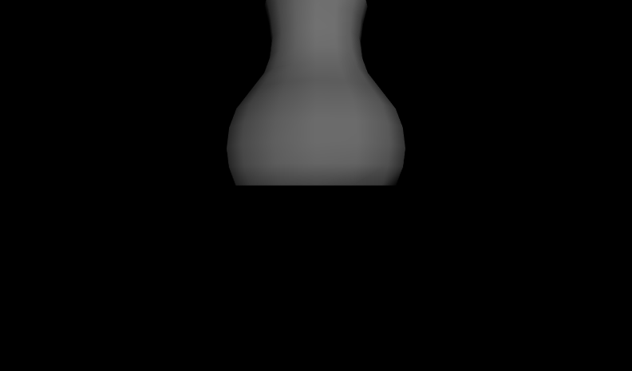
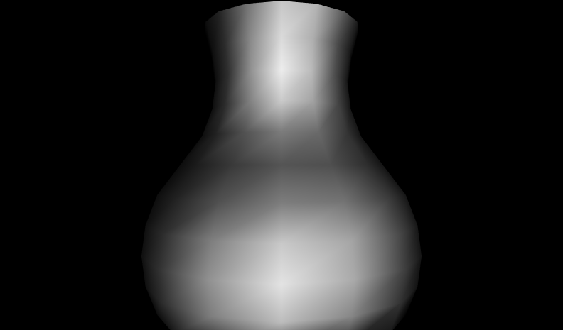
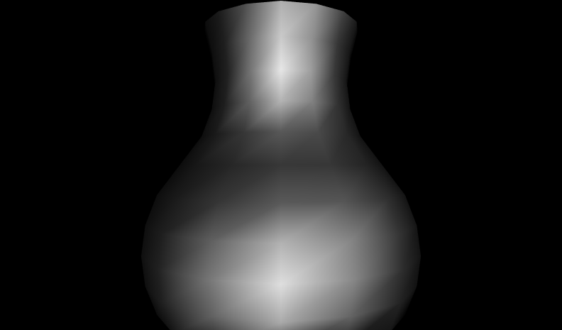
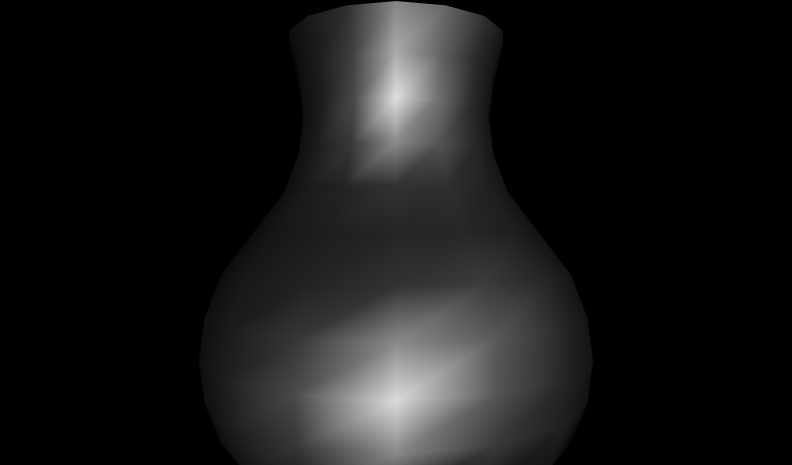
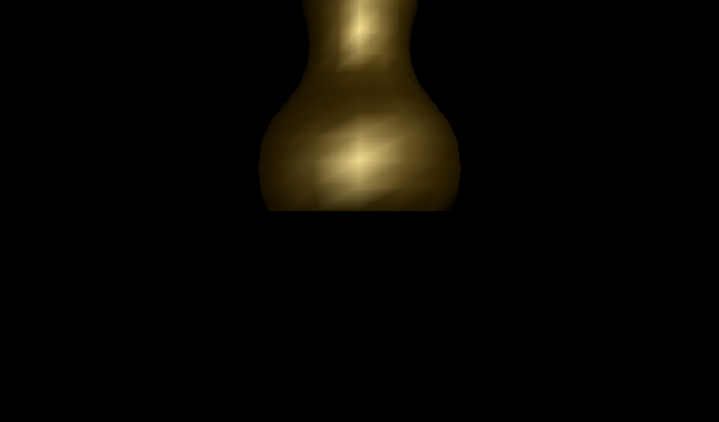

|
The Material node controls overall rendering properties including the shading color (diffuseColor),
glow color (emissiveColor), transparency, shininess and ambient intensity.
Proper combinations of values can emulate the properties of shiny materials, such as metals.
These X3D scenes are adapted directly from the
original VRML 2.0 Sourcebook chapter examples.
Also available:
Introduction to VRML97 SIGGRAPH98 course notes.
|
![[1] Figure21.4aDullGreyVase.x3d - Dull grey vase](_viewpoints/Figure21.4aDullGreyVase.x3d._VP_Dull_grey_vase.png){kind=link}
![[2] Figure21.4aDullGreyVase.x3d - (default X3D view from 0 0 10)](_viewpoints/Figure21.4aDullGreyVase.x3d._VP_Default_viewpoint.png){kind=link}
![[3] Figure21.4bSomewhatShinyGreyVase.x3d - Somewhat shiny grey vase](_viewpoints/Figure21.4bSomewhatShinyGreyVase.x3d._VP_Somewhat_shiny_grey_vase.png){kind=link}
![[4] Figure21.4bSomewhatShinyGreyVase.x3d - (default X3D view from 0 0 10)](_viewpoints/Figure21.4bSomewhatShinyGreyVase.x3d._VP_Default_viewpoint.png){kind=link}
![[5] Figure21.4cShinyGreyVase.x3d - Shiny grey vase](_viewpoints/Figure21.4cShinyGreyVase.x3d._VP_Shiny_grey_vase.png){kind=link}
![[6] Figure21.4cShinyGreyVase.x3d - (default X3D view from 0 0 10)](_viewpoints/Figure21.4cShinyGreyVase.x3d._VP_Default_viewpoint.png){kind=link}
![[7] Figure21.4dVeryShinyGreyVase.x3d - Very shiny grey vase](_viewpoints/Figure21.4dVeryShinyGreyVase.x3d._VP_Very_shiny_grey_vase.png){kind=link}
![[8] Figure21.4dVeryShinyGreyVase.x3d - (default X3D view from 0 0 10)](_viewpoints/Figure21.4dVeryShinyGreyVase.x3d._VP_Default_viewpoint.png){kind=link}
![[9] Figure21.5ShinyGoldVase.x3d - Very shiny grey vase](_viewpoints/Figure21.5ShinyGoldVase.x3d._VP_Very_shiny_grey_vase.png){kind=link}
![[10] Figure21.5ShinyGoldVase.x3d - (default X3D view from 0 0 10)](_viewpoints/Figure21.5ShinyGoldVase.x3d._VP_Default_viewpoint.png){kind=link}